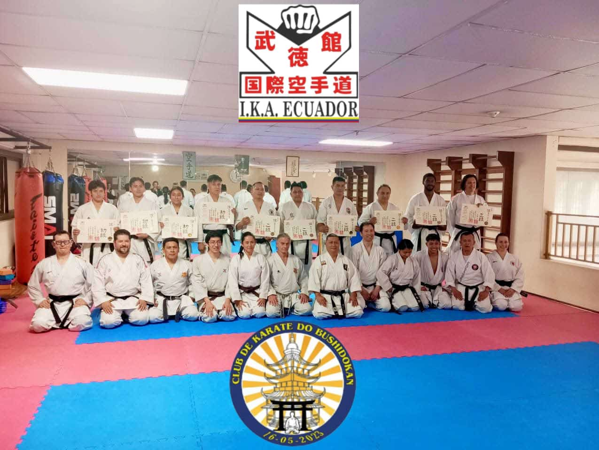

Corazón Sabio
Comprometidos con el desarrollo integral de niños, niñas y jóvenes a través del Karate-Do y los valores del Bushido.
ü§ù Apadrina a nuestros ni√±os
En Bushidokan creemos que el Karate-Do transforma vidas. Nuestra Fundación Bushidokan brinda la oportunidad a niños y jóvenes en situación vulnerable para que accedan a formación marcial gratuita o subvencionada.
- ✅ Programas de formación gratuita para sectores vulnerables
- ✅ Uniformes, materiales y transporte incluidos
- ✅ Seguimiento académico, familiar y emocional
- ✅ Integración a actividades culturales y deportivas
Tú puedes marcar la diferencia. ¡Apadrina a un futuro campeón hoy!

üè¢ Sponsors Públicos y Privados
Agradecemos profundamente a nuestros aliados estratégicos que hacen posible el crecimiento de nuestra comunidad Bushidokan.
- ✅ Empresas privadas que apoyan el deporte y la juventud
- ✅ Instituciones públicas comprometidas con el desarrollo integral
- ✅ Patrocinadores que aportan recursos logísticos y económicos
- ✅ Aliados comunitarios que brindan espacios, talleres y asesorías
¡Gracias por ser parte de esta misión transformadora!

⬅️ Volver al inicio